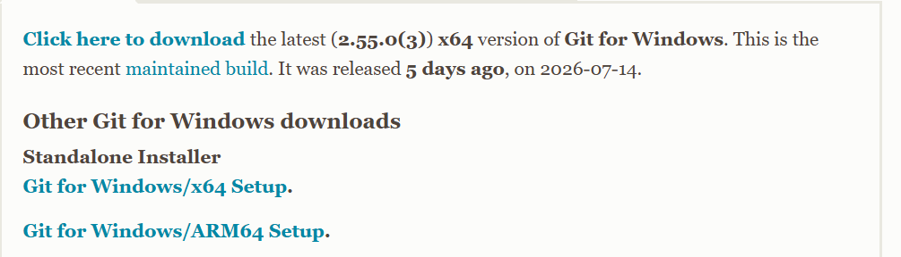

클로드(Claude)가 뭔가요?
말을 걸면 대답해 주는 인공지능 비서입니다. 궁금한 걸 물어보고, 글을 써 달라고 하고,
긴 문서를 대신 읽고 요약해 달라고 할 수 있습니다.
지금부터 그 비서를 내 컴퓨터에 들여놓는 겁니다.
시작하기 전에 — 준비물
이 세 가지만 있으면 됩니다.
- 윈도우 컴퓨터
윈도우 10 또는 윈도우 11이면 됩니다. 요즘 나온 컴퓨터는 거의 다 됩니다.
- 인터넷 연결
인터넷이 되는 컴퓨터여야 합니다.
- 이메일 주소
네이버, 다음, 지메일 아무거나 괜찮습니다. 구글(지메일) 계정이 있으면 제일 간편합니다.
💰 돈이 드나요? 안 듭니다. 프로그램 설치도, 기본 대화 기능도 무료입니다.
카드 번호 같은 거 넣을 일 없습니다. (더 강력한 기능은 나중에 유료로 열 수 있지만, 지금은 신경 안 쓰셔도 됩니다.)
1
인터넷 창을 엽니다
평소에 인터넷 할 때 누르시는 그 동그란 아이콘을 누르세요.
- 크롬 — 빨강·노랑·초록이 섞인 동그라미
- 엣지(Edge) — 파란색 물결 모양 동그라미
- 네이버 웨일 — 파란 고래 모양
셋 중 아무거나 괜찮습니다. 안 보이면 화면 왼쪽 아래 ⊞ 윈도우 버튼을 누르고
edge 라고 쳐 보세요. 나오는 걸 누르면 됩니다.
2
주소 칸에 이 주소를 칩니다
인터넷 창 맨 위에 길쭉하게 생긴 하얀 칸이 있습니다. 그게 주소 칸입니다.
이렇게주소 칸을 한 번 클릭해서 안에 있던 글자를 지우고,
아래 글자를 그대로 칩니다.
↑ 여기가 주소 칸입니다. 이렇게 치고 엔터를 누르세요.
⚠️ 여기서 제일 많이 틀립니다.
· 네이버 검색창이 아니라 맨 위 주소 칸입니다.
· claude 입니다. 클라우드(cloud)가 아닙니다. 순서가 c-l-a-u-d-e 입니다.
· 중간에 띄어쓰기 없이 붙여서 칩니다.
다 쳤으면 키보드의 Enter ↵ 를 누릅니다.
3
검은 버튼을 누릅니다
영어로 된 화면이 나옵니다. 놀라지 마세요. 누를 건 딱 하나입니다.
Download Claude
⬇ Download for Windows
Windows (arm64)
↑ 위에 있는 큰 검은 버튼을 누르세요. 아래 작은 건 누르지 않습니다.
이렇게Download for Windows 라고 적힌 큰 버튼을 클릭.
버튼이 여러 개 보여서 헷갈리신다면?
Windows 라는 글자가 들어간 것 중 제일 크고 진한 버튼을 누르시면 맞습니다.
macOS, Linux, iOS, Android 는 다른 기계용이니 무시하세요.
4
내려받은 파일을 엽니다
버튼을 누르면 화면이 그대로인 것처럼 보이지만, 뒤에서 파일을 받고 있습니다. 몇 초 기다리세요.
다 받아지면 이렇게 나타납니다 — 셋 중 보이는 것을 누르시면 됩니다.
- 화면 오른쪽 위에 아래 화살표(⬇) 표시가 뜹니다. → 그걸 누르면 방금 받은 파일이 보입니다. → 파일 이름을 클릭.
- 또는 화면 왼쪽 아래에 파일 이름이 길쭉하게 나타납니다. → 그걸 클릭.
- 아무것도 안 보이면 — 키보드에서 ⊞ 윈도우 + E 를 같이 눌러
다운로드 폴더를 열고, Claude 로 시작하는 파일을 두 번 클릭.
파일 이름은 Claude-Setup 처럼 생겼습니다. 이름이 조금 달라도 Claude 로 시작하면 그게 맞습니다.
5
파란 경고창이 뜨면 — 무시하고 진행
이런 파란 창이 뜰 수 있습니다. 고장 난 게 아닙니다. 윈도우가 처음 보는 프로그램마다 하는 인사입니다.
Windows의 PC 보호
Microsoft Defender SmartScreen에서 인식할 수 없는 앱의 시작을 차단했습니다.
추가 정보
이렇게① 추가 정보 글씨를 클릭 → ② 새로 생긴 실행 버튼을 클릭.
↓
Windows의 PC 보호
앱: Claude-Setup.exe
↑ 이제 실행 버튼이 생깁니다. 이걸 누르세요.
또 다른 창이 뜰 수도 있습니다 — "이 앱이 디바이스를 변경할 수 있도록 허용하시겠어요?"
여기서는 예 를 누르시면 됩니다.
✅ 안심하셔도 됩니다. 방금 그 주소(claude.ai)는 클로드를 만든 회사의 공식 홈페이지입니다.
거기서 직접 받은 파일이니 문제없습니다.
6
설치가 알아서 됩니다 — 기다리세요
여기서부터는 아무것도 안 누르셔도 됩니다.
막대기가 차오르거나 동그라미가 빙빙 돌아갑니다. 1~2분 정도 걸립니다.
그동안 컴퓨터를 끄거나 창을 닫지 마세요.
✅ 설치가 끝나면 클로드 창이 저절로 열립니다. 그러면 성공입니다.
혹시 저절로 안 열려도 괜찮습니다. 왼쪽 아래 ⊞ 윈도우 버튼을 누르고
claude 라고 쳐 보세요. 나오는 걸 누르면 열립니다.
7
로그인 — 내 계정 만들기
클로드가 "누구세요?" 하고 물어봅니다. 딱 한 번만 하면 됩니다.
가장 쉬운 방법 — 구글(지메일) 계정이 있으시면:
이렇게Continue with Google 버튼을 누르고,
쓰던 구글 계정을 고르면 끝입니다. 비밀번호 새로 만들 것도 없습니다.
구글 계정이 없으시면 — 이메일로 하시면 됩니다:
- 칸에 내 이메일 주소를 칩니다. (네이버, 다음 다 됩니다)
- Continue with email 버튼을 누릅니다.
- 잠시 후 내 이메일함에 숫자 6자리가 적힌 편지가 옵니다.
- 그 숫자를 클로드 화면에 옮겨 칩니다.
⚠️ 이메일이 안 보이면 스팸함(스팸메일함)을 꼭 확인해 보세요. 거기 들어가 있는 경우가 많습니다.
이름을 물어보면 편하게 부를 이름을 적으시면 됩니다. 그다음 나오는 안내 화면은
다음(Next)·계속(Continue)만 눌러서 넘어가시면 됩니다.
8
말을 걸어봅니다
드디어 다 됐습니다. 화면 맨 아래 길쭉한 칸이 말을 거는 곳입니다.
안녕하세요. 오늘 날씨 이야기 좀 해줄래요?
안녕하세요! 반갑습니다 😊 어느 지역에 계신지 알려주시면…
여기에 하고 싶은 말을 쓰세요…
이렇게아래 칸에 아무 말이나 쓰고 Enter ↵ 를 누르세요.
한글로 물어보셔도 한글로 대답합니다.
화면 위에 Chat · Cowork · Code 라는 글자 세 개가 보일 겁니다.
지금은 Chat(대화) 하나만 쓰시면 됩니다. 나머지 둘은 나중 이야기이니 신경 쓰지 마세요.
9
다음에 또 열려면 — 바탕에 붙여두기
매번 찾아 헤매지 않도록, 화면 아래 줄에 딱 붙여 두겠습니다.
- 클로드가 켜져 있는 상태에서, 화면 맨 아래 줄(작업 표시줄)에 있는 클로드 아이콘을 봅니다.
- 그 아이콘 위에서 마우스 오른쪽 버튼을 클릭합니다.
- 나오는 목록에서 작업 표시줄에 고정을 클릭합니다.
✅ 이제 클로드를 껐다 켜도 아이콘이 그 자리에 남아 있습니다. 다음부터는 그것만 누르면 됩니다.
막히셨나요?
자주 생기는 일들입니다. 해당하는 걸 눌러보세요.
주소를 쳤는데 엉뚱한 화면이 나와요
주소 칸이 아니라 검색창에 치신 겁니다. 인터넷 창 맨 위에 있는 길쭉한 하얀 칸에
쳐야 합니다. 글자도 다시 확인해 주세요 — claude.ai/download 입니다.
(클라우드 아님, 중간에 띄어쓰기 없음)
파일을 받았는데 어디로 갔는지 모르겠어요
키보드에서 ⊞ 윈도우 + E 를 같이 누르면
폴더 창이 열립니다. 왼쪽 목록에서 다운로드를 클릭하면 방금 받은 파일이 맨 위에 있습니다.
Claude 로 시작하는 파일을 두 번 빠르게 클릭하세요.
"이 앱은 이 디바이스에서 실행할 수 없습니다"라고 나와요
컴퓨터 속 부품 종류가 달라서 그렇습니다. 3번 단계로 다시 가서, 이번엔 아래쪽에 있는
Windows (arm64) 버튼을 눌러 받아보세요. 이걸로 안 되면 컴퓨터가 윈도우 10보다 오래된 것일 수 있습니다.
파란 경고창에 "실행" 버튼이 안 보여요
먼저 추가 정보라는 글씨를 클릭하셔야 합니다. 그러면 그때 실행 버튼이
새로 생깁니다. 처음부터는 안 보이는 게 정상입니다.
인증 번호 이메일이 안 와요
① 스팸함을 확인하세요(여기 있는 경우가 가장 많습니다).
② 1~2분 정도 기다려 보세요. ③ 그래도 없으면 화면의 Resend(다시 보내기)를 눌러보세요.
④ 이메일 주소에 오타가 없는지도 다시 보세요.
영어만 나와서 무슨 말인지 모르겠어요
설치 화면만 영어일 뿐, 대화는 한글로 하시면 됩니다. 클로드에게
"앞으로 한국어로 대답해 줘" 라고 한 번 말해두시면 계속 한글로 대답합니다.
돈을 내라고 하는 화면이 나와요
화면 위쪽 Code 나 Cowork 를 누르면 그런 안내가 나옵니다.
Chat 을 다시 누르시면 됩니다. Chat은 무료입니다. 결제 화면이 나오면 그냥 닫으세요.
설치한 클로드를 다시 못 찾겠어요
화면 왼쪽 아래 구석의 ⊞ 윈도우 버튼을 누르고,
키보드로 claude 라고 치세요. 목록에 나오는 Claude를 클릭하면 열립니다.
그다음 9번 단계대로 아래 줄에 고정해 두세요.
🎉
다 끝났습니다
이제 클로드는 내 컴퓨터에 살고 있습니다.
말 거는 데 정답은 없습니다. 편하게 물어보세요.
💬 이렇게 말 걸어보세요
· "김장김치 맛있게 담그는 법 알려줘"
· "손주 돌잔치 축하 인사말 좀 써줘"
· "이 문자가 사기인지 봐줘" (문자 내용을 붙여넣고)
· "복잡한 서류인데 쉬운 말로 설명해줘"
한 가지만 기억하세요. 클로드도 가끔 틀립니다.
중요한 일(돈·건강·법 관련)은 클로드 말만 믿지 마시고 꼭 확인해 보세요.
여기까지가 1단계(무료)입니다. 이것만으로도 충분히 쓰실 수 있습니다.
컴퓨터로 뭔가를 만들고 싶으시면 →
2단계 · 클로드 코드 준비하기
이런 걸 대신 해 줍니다
말로 시키면 파일을 직접 만들고 고칩니다.
- 홈페이지·간단한 프로그램 만들기
"우리 가게 소개 홈페이지 하나 만들어줘" → 진짜 파일이 생깁니다
- 엑셀·문서 여러 개를 한꺼번에 정리
"이 폴더 엑셀들 합쳐서 한 장으로 만들어줘"
- 사진·파일 이름 한꺼번에 바꾸기
손으로 하면 몇 시간 걸릴 일을 몇 분에
- 내 컴퓨터 안의 자료를 읽고 정리
1단계 클로드는 못 하는 일입니다. 파일을 못 보거든요
💳 여기서부터는 돈이 듭니다. 분명히 말씀드립니다.
1단계 대화(Chat)는 계속 무료지만, 클로드 코드는 유료 구독을 해야만 켜집니다.
구독을 안 하면 버튼을 눌러도 "업그레이드하세요" 안내만 나옵니다.
가장 싼 이용권 · PRO
월 20달러 정도
1년 치를 한 번에 내면 월 17달러로 조금 싸집니다.
우리 돈으로 대략 3만 원 안팎입니다. (환율·세금에 따라 달라집니다)
언제든 해지할 수 있습니다.
부담되시면 여기서 멈추셔도 됩니다. 1단계만으로도 물어보고, 글 쓰고, 요약하는 건 다 됩니다.
2단계는 컴퓨터로 뭔가를 만들어 보고 싶은 분께 권합니다.
📋 2단계를 위해 준비할 것 — 딱 3가지
- 유료 이용권(Pro) 결제 — 카드 필요
- 깃(Git)이라는 프로그램 설치 — 무료, 이게 없으면 아예 안 켜집니다
- 작업할 폴더 하나 만들기 — 클로드가 일할 방입니다
아래 1~3번에서 이 세 가지를 차례로 합니다.
1
유료 이용권 켜기
클로드 창에서 바로 하실 수 있습니다.
- 클로드 화면 맨 위 가운데의 Code 글자를 클릭합니다.
- 구독이 없으면 업그레이드하라는 안내가 나옵니다. 여기서 안내대로 Pro를 고릅니다.
- 카드 정보를 넣고 결제합니다.
고를 때Monthly(월간)로 시작하시길 권합니다.
1년 치가 조금 싸지만, 우선 한 달 써 보고 마음에 들면 그때 바꾸셔도 됩니다.
해지는 어떻게 하나요? 클로드 화면의 설정(Settings) → Billing(결제) 에서
언제든 해지할 수 있습니다. 해지해도 그달 남은 기간은 계속 쓸 수 있습니다.
2
깃(Git) 설치 — 이게 제일 중요합니다
클로드 코드는 깃(Git)이라는 프로그램이 있어야 켜집니다.
없으면 결제를 했어도 안 열립니다. 무료입니다.
⚠️ 2단계에서 막히는 사람 열에 아홉이 여기입니다. 꼭 하고 넘어가세요.
깃이 뭔가요? 파일이 바뀐 걸 기록해 주는 도구입니다. 클로드가 내 파일을 고칠 때
"뭘 어떻게 바꿨는지" 보여주고, 잘못되면 되돌리기 위해 씁니다. 안전장치라고 보시면 됩니다.
설치 방법
git-scm.com/downloads/win|
↑ 인터넷 창 주소 칸에 이렇게 치고 엔터
이런 화면이 나옵니다. 맨 위 파란 글씨만 누르면 됩니다.

실제 화면
맨 윗줄 Click here to download (파란 글씨)를 클릭하세요.
⚠️ 아래에 Other Git for Windows downloads 라며 파란 글씨가 여러 개 더 보입니다.
그건 누르지 마세요. 맨 위 첫 줄 하나만 누르시면 됩니다.
파일이 받아지면 엽니다. (1단계 4번과 똑같은 방법입니다)
1단계 5번의 파란 경고창이 또 나올 수 있는데, 똑같이 추가 정보 → 실행 하시면 됩니다.
설치 창이 뜨면 — 이렇게 생겼습니다
아래 넷은 실제 화면을 그림으로 옮긴 것입니다.
글자와 위치가 조금 다를 수 있지만, 버튼 자리와 누를 순서는 같습니다.
Git Setup✕
Information
Please read the following important information before continuing.
GNU GENERAL PUBLIC LICENSE
Version 2, June 1991 …
첫 화면입니다. 영어가 잔뜩 나오지만 읽지 않으셔도 됩니다.
오른쪽 아래 파란 Next 를 누르세요.
↓
Git Setup✕
Select Components
Which components should be installed?
☑ Windows Explorer integration
☑ Git LFS
☑ Associate .git* files …
제목만 바뀐 비슷한 화면이 계속 나옵니다.
안에 있는 건 하나도 건드리지 마세요. Next만 누르시면 됩니다.
🔁 이 화면이 열 번 넘게 반복됩니다
제목이 계속 바뀌지만 하는 일은 똑같습니다 — Next, Next, Next…
✅ 왜 아무것도 안 건드려도 되나요?
처음 찍혀 있는 값이 대부분의 사람에게 맞는 값으로 미리 골라져 있기 때문입니다.
괜히 바꾸면 오히려 탈이 납니다. 그냥 Next만 누르는 게 정답입니다.
↓
Git Setup✕
Ready to Install
Setup is now ready to begin installing Git on your computer.
Destination location:
C:\Program Files\Git
✋ 여기서 버튼 글씨가 바뀝니다. Next 자리에 Install 이 나옵니다.
이게 "이제 진짜 설치합니다" 라는 뜻입니다. Install 을 누르세요.
기억할 것버튼 글씨가 Next 에서 Install 로 바뀌면 거의 끝난 겁니다.
그다음엔 막대기가 차오릅니다. 1~2분 기다리세요.
↓
Git Setup✕
Completing the Git Setup Wizard
Setup has finished installing Git on your computer.
☐ Launch Git Bash
☐ View Release Notes
마지막 화면입니다. Finish 를 누르면 설치 끝.
안에 네모칸(☐)이 있으면 전부 빈 칸으로 두고 Finish를 누르세요.
설치가 끝나도 화면에 아무 변화가 없습니다. 정상입니다.
깃은 뒤에서 조용히 일하는 프로그램이라 바탕화면에 아이콘이 안 생깁니다.
🔁 깃을 설치했으면 클로드를 반드시 껐다 켜세요.
그냥 창만 닫는 게 아니라 완전히 종료해야 합니다.
→ 화면 오른쪽 아래 작은 화살표(∧)를 눌러 클로드 아이콘이 있으면
마우스 오른쪽 클릭 → 종료(Quit) → 다시 실행.
이걸 안 하면 깃을 깔고도 "깃이 없다"고 나옵니다.
3
클로드가 일할 폴더 만들기
클로드 코드는 폴더 하나를 정해 주면 그 안에서만 일합니다.
아무 데나 헤집고 다니지 않으니 안심하세요.
- 바탕화면의 빈 곳에서 마우스 오른쪽 버튼을 클릭합니다.
- 새로 만들기 → 폴더 를 클릭합니다.
- 이름을 claude-work 라고 칩니다. (영어로, 띄어쓰기 없이)
- Enter ↵ 를 누릅니다.
왜 영어 이름인가요? 한글이나 띄어쓰기가 들어간 폴더 이름은 가끔 말썽을 부립니다.
처음이니 안전하게 claude-work 로 하시길 권합니다.
4
Code 화면 열고 폴더 지정하기
이제 준비가 다 됐습니다. 연결만 하면 됩니다.
어디서 일할까요?
Local
Remote
SSH
📁 Select folder
- 화면 맨 위 가운데의 Code 를 클릭합니다.
- Local 을 고릅니다. (= 내 컴퓨터에서 일하기. Remote·SSH·WSL은 무시하세요)
- Select folder(폴더 선택) 를 누릅니다.
- 아까 바탕화면에 만든 claude-work 폴더를 찾아 고르고 확인을 누릅니다.
✅ 여기까지 오면 환경설정 끝입니다. 이제 말만 걸면 됩니다.
5
안전장치 확인 — 꼭 보고 가세요
클로드가 내 파일을 마음대로 고치면 곤란하겠죠.
허락받고 고치도록 되어 있는지 확인합니다.
글 쓰는 칸 옆(보내기 버튼 근처)에 작은 글씨로 모드를 고르는 곳이 있습니다.
확인거기가 Manual(수동) 로 되어 있으면 그대로 두세요.
처음 쓰는 분에게 공식적으로 권장되는 설정입니다.
- Manual — 뭘 고치기 전에 매번 물어봅니다. ✅ 이걸로 시작
- Accept edits — 안 물어보고 알아서 고칩니다. 익숙해진 뒤에
- Plan — 안 고치고 계획만 세워서 보여줍니다. 큰일 시킬 때
✅ Manual이면 클로드가 파일을 고치기 전에 "이렇게 바꿀게요" 하고 보여줍니다.
초록색은 새로 넣을 것, 빨간색은 지울 것입니다.
마음에 들면 Accept(수락), 아니면 Reject(거절)를 누르세요.
거절하면 파일은 하나도 안 바뀝니다.
6
첫 일 시켜보기
이제 시켜봅시다. 한글로 말해도 됩니다.
내 소개 홈페이지를 아주 간단하게 하나 만들어줘. 이름은 홍길동이야.
네, index.html 파일을 만들겠습니다. 이렇게 작성할게요 —
+ 초록색 줄들…
✓ Accept
✕ Reject
💬 이렇게 시켜보세요
· "내 소개 홈페이지를 간단하게 만들어줘"
· "이 폴더에 오늘 할 일 목록 파일을 만들어줘"
· "방금 만든 걸 좀 더 예쁘게 고쳐줘"
막히면 클로드에게 그냥 물어보세요.
"방금 뭘 한 건지 쉬운 말로 설명해줘" 라고 하면 설명해 줍니다.
2단계에서 막히셨나요?
거의 다 아래 다섯 가지 중 하나입니다.
Code를 눌렀는데 "업그레이드하세요"만 나와요
아직 유료 구독이 안 켜진 상태입니다. 1번 단계로 돌아가 Pro 결제를 하세요.
결제를 방금 하셨다면 클로드를 완전히 껐다 켜 보세요.
깃(Git)을 깔았는데 계속 없다고 나와요
클로드를 완전히 종료하지 않아서 그렇습니다. 창의 X만 누르면 뒤에서 계속 켜져 있습니다.
화면 오른쪽 아래 작은 화살표(∧)를 눌러 클로드 아이콘을 찾고,
마우스 오른쪽 클릭 → 종료한 다음 다시 실행하세요. 그래도 안 되면 컴퓨터를 재부팅하면 해결됩니다.
Error 403 / 권한 오류 같은 게 나와요
공식 해결 순서입니다. ① 로그아웃했다가 다시 로그인하세요 — 이게 가장 잘 듣습니다.
② 유료 구독이 살아 있는지 확인하세요. ③ 클로드를 완전히 종료했다가 다시 켜고 로그인하세요.
④ 인터넷 연결도 확인해 보세요.
클로드가 내 컴퓨터를 망가뜨리면 어쩌죠?
세 겹으로 막혀 있습니다. ① 정해준 폴더 안에서만 일합니다.
② Manual 모드면 고치기 전에 매번 물어봅니다. ③ 거절하면 아무것도 안 바뀝니다.
그래도 걱정되시면 claude-work 폴더에는 중요한 원본 파일을 넣지 마세요.
사본을 넣고 시키시면 마음이 편합니다.
돈을 그만 내고 싶어요
클로드 화면의 설정(Settings) → Billing(결제) 에서 해지하시면 됩니다.
해지해도 이미 낸 그달 말까지는 그대로 쓸 수 있고, 그 뒤로는 자동으로 무료(Chat)로 돌아갑니다.
만들어 둔 파일은 내 컴퓨터에 그대로 남습니다.
🛠️
환경설정 완료
이제 클로드가 내 컴퓨터에서 직접 손을 씁니다.
처음엔 작은 것부터 시켜보세요. 익숙해지는 게 먼저입니다.
천천히 하셔도 됩니다. 한 번에 다 알 필요 없습니다.
모르는 게 나오면 클로드에게 "이게 무슨 뜻이야? 쉽게 설명해줘" 라고 물어보시는 게 가장 빠릅니다.